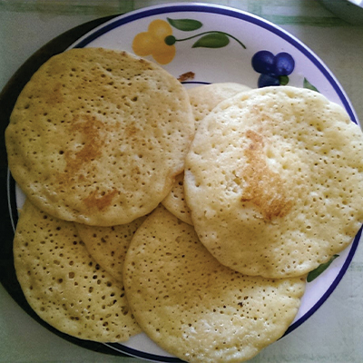

Le Baghrir (ou la Crèpe Mille-Trous)

Hello, aujourd'hui, je vais vous montrer comment faire des baghrir, c'est une recette maghrébienne qui peut un peu changer en fonction du pays (Maroc, Algérie). Celle que je vais réaliser est la recette algérienne, celle que ma grand-mère m'a toujours fait et me fait encore aujourd'hui. C'est un dessert qui a toujours fait partie de mon enfance. J'espère que vous aimerez !
C'est une recette assez simple à faire, je vous le promets !
Ingrédients :
- 275 g de semoule fine de blé dur
- 150 g de farine T45
- 650 ml d'eau tiède
- 1 cuillère à café de sel (+ ou – selon le goût)
- 1 cuillère à café de sucre ou de sucre vanillé
- 1 sachet de levure boulangère sèche (8 gr) ou 15 g de levure boulangère fraîche
- 12 g de levure chimique
- Vous pouvez l'accompagner de beurre fondu, de miel, de sucre ou encore de pâte à tartiner pour servir
Etapes à suivre :
-
Renversez l'eau tiède dans un saladier et ajouter au fur et à mesure la semoule fine, la farine, la levure boulangère et le sucre. Puis mélanger avec un fouet (ou un bateur électrique) jusqu'à obtenir un mélange homogène.
- Couvrir le saladier avec un chiffon ou une assiette et laisser reposer pendant 25 à 30 minutes.
- Faire chauffer une poêle (de préférence anti-adhésive, sinon utiliser du beurre pour la cuisson) et y verser une louche de pâte et laisser cuire à feu moyen.
- Le baghrir est prêt lorsque toute la surface est recouverte de petits trous réguliers (c'est comme ça que l'on sait que la recette est réussite)
- Retirer la crêpe et recommencer l'opération jusqu'à ce qu'il n'y ait plus de pâte.
- Servir aussitôt (c'est toujours mieux quand c'est encore chaud !), vous pouvez les manger nature ou avec l'accompagnement de votre choix.